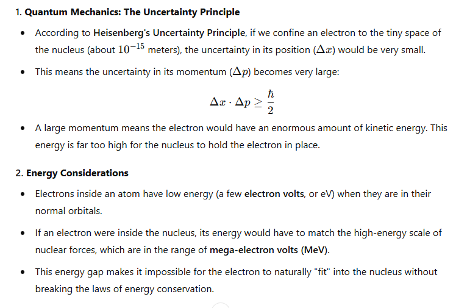
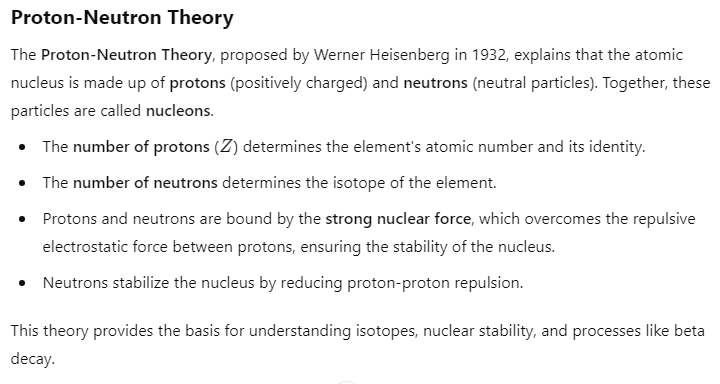

Rectifier: A rectifier is an electronic device that converts alternating current (AC) to direct current (DC). This process is called rectification. Rectifiers are commonly used in power supplies for most electronic devices and appliances, as DC is the type of current needed for their proper operation.
Circuit Diagram of Full-Wave Rectifier: The circuit diagram is as follows:

Working of Full-Wave Rectifier: The working is explained in the following steps:
- STEP 1: Current is fed into the circuit as input, consisting of positive and negative lobes.
- STEP 2: The AC input is fed into the transformer, which splits the input voltage into two equal parts, one for each half of the AC cycle.
{ is transformer ne input nu two parts vich divide kar dena, pehla step ch only +ve lobe jana process
ch then dosra negetive loab the cycle chalda rehna, +ve then -ve }
- STEP 3: During the positive half cycle of the AC input, the top half of the transformer output becomes positive, and the bottom half becomes negative.

- STEP 4: The diode in the top half of the circuit (D1) becomes forward-biased and allows current to pass through, while the diode in the bottom half of the circuit (D2) is reverse-biased and does not conduct current.
Therefore, with the first positive lobe of AC input, the output is:

- STEP 5: During the negative half cycle of the AC input, the top half of the transformer output becomes negative, and the bottom half becomes positive.

- STEP 6: The diode D1 becomes reverse-biased and does not conduct current. The diode D2 becomes forward-biased and allows current to pass through. Therefore, with the negative lobe of AC input, the output is:

- STEP 7: Then agin +ve lob of the input AC is fed into the circuit and the -ve lobe. this cycle keep continu.
- STEP 8: Both positive and negative halves of the AC input are used to produce a continuous pulsating DC voltage across the load resistor (R)
therefore final outpu be as: